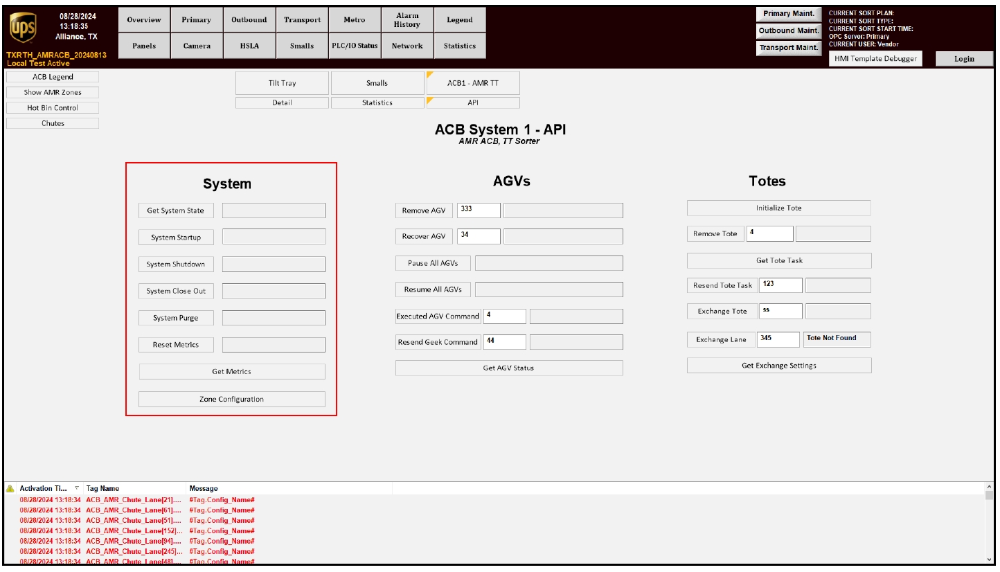
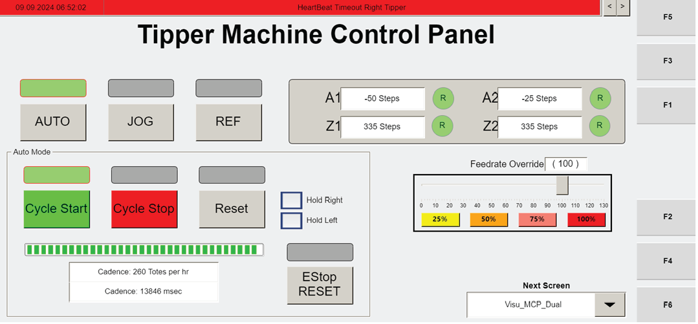

| Procedure ID | proc_move_the_tipper_from_home_to_ready_and_place_it_in_auto_mode_v1 |
|---|---|
| Title | Move The Tipper From Home To Ready And Place It In AUTO Mode |
| Procedure Type | operation |
| Primary Role | operator |
| Support Safe | Yes |
| Validation Status | needs_sme_review |
| Merge Status | source_finalized |
Advance the tipper from the homed state to ready and place it in AUTO mode so it waits for WCS instructions.
Use after the tipper has been homed and the operator station is being placed into its documented ready operating state. This procedure is used to move the motor from home to ready, place the tipper in AUTO mode, and confirm the tipper is waiting for WCS instructions.
Responsible role: operator
Instruction:
At the operator station, press CYCLE START.
Expected result:
The startup sequence begins and the tipper motor proceeds from home toward ready.
Screens / Images:

Stop or Escalate If:
Responsible role: operator
Instruction:
Verify that the motor moves from home to ready after CYCLE START is pressed.
Expected result:
The motor moves from home to ready.
Screens / Images:
Stop or Escalate If:
Responsible role: operator
Instruction:
Place the tipper in AUTO mode.
Expected result:
The tipper is in AUTO mode.
Screens / Images:

Stop or Escalate If:
Responsible role: operator
Instruction:
Verify the tipper is waiting for the WCS to send instructions.
Expected result:
The tipper waits for the WCS to send instructions.
Screens / Images:
Stop or Escalate If: